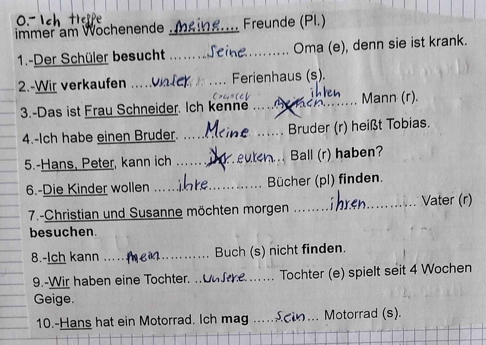

Gramática del Nivel A1
1. Estructuras gramaticales:
Para aquéllas en los que el verbo esté en pasado/pretérito o en presente
Estructura de las preguntas:
W-Frage + verbo conjugado + sujeto + complementos
Sujeto en 1º lugar en la estructura de las respuestas/frases:
sujeto + verbo conjugado + complementos
Sujeto en 3º lugar en la estructura de las respuestas/frases:
complemento + verbo conjugado + sujeto + otros complementos
Particularidades respecto a como puede ser la W-Frage:
1. Wie? (¿Cómo?) => /vi?/
2. Wer? (¿Quién?) => /vea?/
3. Wo? (¿Dónde?) => /vo?/
4. Woher? (¿De dónde?) => /vojea?/
5. Welche? (¿Cuál?) => /velse?/
6. Wie viel? (¿Cuánto?) => /vi fil?/
7. Was? (¿Qué?) => /vas?/
8. Wann? (¿Cuándo?) => /van?/
9. Warum? (¿Por qué?) => /vagum?/
10. Wohin? (¿A dónde?) => /vojin?/
Particularidades respecto a como puede ser el sujeto:
1. ich (yo)
2. du (tú) - para modo informal
3. er (él)
4. sie (ella)
5. es (esto/ello)
6. wir (nosotros/as)
7. ihr (vosotros/as)
8. sie (ellos/as)
9. Sie (usted) - para modo formal
En informal se usa sólo el nombre (Vorname) y en formal se usa el nombre y el apellido (Vorname + Nachname)
El verbo conjugado siempre va en 2º lugar
Los complementos de lugar van precedidos de la preposición ins
2. Alfabeto:
a - /a/
b - /be/
c - /tse/
d - /de/
e - /e/
f - /ef/
g - /gue/
h - /ja/
i - /i/
j - /yot/
k - /ka/
l - /el/
m - /em/
n - /en/
o - /o/
p - /pe/
q - /cu/
r - /eg/
s - /es/
t - /ti/
u - /u/
v - /fau/
w - /ve/
x - /iks/
y - upsilon
z - /tset/
ä - /ea/
ö - /uo/
ü - /iu/
ß - /estset/
Cuando hay una vocal + h, la pronunciación sería como una vocal larga
Cuando hay una vocal + ll, la pronunciación sería como una vocal corta
3. Símbolos:
@ => at - /et/
. => punkt - /punkt/
- => minus - /minus/
_ => understrich - /undegstrig/
4. Números:
0 => null => /nul/
1 => eins => /ains/
2 => zwei => /svai/
3 => drei => /drai/
4 => vier => /fía/
5 => fünf => /funf/
6 => sechs => /sex/
7 => sieben => /siben/
8 => acht => /agt/
9 => neun => /noin/
10 => zehn => /tsen/
11 => elf => /elf/
12 => zwölf => /tsuolf/
13 => dreizehn => /draitsen/
14 => vierzehn => /fíatsen/
15 => fünfzehn => /funfsen/
16 => sechzehn => /sexsen/
17 => siebzehn => /sibsen/
18 => achtzehn => /agtsen/
19 => neunzehn => /nointsen/
20 => zwanzig => /svansic/
21-29 => número del 1 al 9 + und + zwanzig
30 => dreißig => /draisig/
31-39 => número del 1 al 9 + und + dreißig
40 => vierzig => /fíatsig/
41-49 => número del 1 al 9 + und + vierzig
50 => fünfzig => /funfsig/
51-59 => número del 1 al 9 + und + fünfzig
60 => sechzig => /sexsig/
61-69 => número del 1 al 9 + und + sechzig
70 => siebzig => /sibsig/
71-79 => número del 1 al 9 + und + siebzig
80 => achtzig => /agtsig/
81-89 => número del 1 al 9 + und + achtzig
90 => neunzig => /noinsig/
91-99 => número del 1 al 9 + und + neunzig
100 => hundert => /jundat/
1XX => hundert + número del 1 al 99
X00 => número del 2 al 9 + hundert
XXX => número del 2 al 9 + hundert + número del 1 al 99
1000 => tausend => /tausend/
X000 => número del 2 al 9 + tausend
XX00 => número del 2 al 9 + tausend + número del 2 al 9 + hundert
XXXX => número del 2 al 9 + tausend + número del 2 al 9 + hundert + número del 1 al 99
Los años van precedidos de la preposición im
5. Países e idiomas:
Land: Deutschland - /doichland/
Sprache: Deutsch - /doich/
Land: Algerien - /alguerien/
Sprache: Arabisch - /arabiSH/
Land: Österreich - /ustegaig/
Sprache: Deutsch - /doich/
Land: die Schweiz - /di SHvais/
Sprache: Französisch, Italienisch, Deutsch und Rätoromanisch - /fransosiSH, italieniSH, doich und guetogomaniSH/

Land: Frankreich - /frankaig/
Sprache: Französisch - /fransosiSH/

Land: Griechenland - /grisinland/
Sprache: Griechisch - /grisiSH/
Land: Irland - /igland/
Sprache: Englisch und Irisch - /engliSH/ und /iguiSH/
Land: Italien - /italien/
Sprache: Italienisch - /italieniSH/

Land: Japan - /yapan/
Sprache: Japanisch - /yapaniSH/
Land: Marokko - /mágoco/
Sprache: Arabisch - /arabiSH/

Land: Portugal - /portugal/
Sprache: Portugiesisch - /portuguisiSH/
Land: Spanien - /spanien/
Sprache: Spanisch - /spaniSH/
Land: Brasilien - /brasilien/
Sprache: Portugiesisch - /portuguisiSH/
Land: die Türkei - /di tugkai/
Sprache: Türkisch - /tugquiSH/
Land: das Vereinigte Königreich - /das vegainicte kunicgraig/
Sprache: Englisch - /engliSH/
Land: die USA - /di u es a/
Sprache: Englisch - /engliSH/
Ejemplos:
Olivia Miller kommt aus den USA - Olivia Miller viene de EE.UU
Gabriel Santos wohnt in San Francisco - Gabriel Santos vive en San Francisco
Boris Walder spricht Englisch und Deutsch - Boris Walder habla inglés y alemán
Saki Tanaka lernt Spanisch - Saki Tanaka estudia/aprende español
Los países van precedidos de la preposición aus
Las ciudades, los municipios, los pueblos y los lugares van precedidos de la preposición in
6. Aficiones:
- Estructura de las frases afirmativas:
sujeto + verbo conjugado + verbo gustar en infinitivo (gern) + complementos
Ejemplo: Er fotografiert gern Landschaften - Le gusta fotografiar paisajes
- Estructura de las frases negativas:
sujeto + verbo conjugado + nicht + verbo gustar en infinitivo (gern) + complementos
Ejemplo: Sie schwimmt nicht gern während eins Stunde - No la gusta nadar durante una hora
- Estructura de las frases interrogativas:
(Op: W-F?) + verbo conjugado + sujeto + verbo gustar en infinitivo (gern) + complementos?
Ejemplo: Reisen ihr gern nach Griechenland? - ¿Os gusta viajar a Grecia?
7. Días de la semana:
| Arbeitszeit - /arbaitssait/ (días laborales) | Wochenende - /vogenende/ (fin de semana) |
|---|---|
| Montag - /montac/ (Lunes) | Samstag - /samstac/ (Sábado) |
| Dienstag - /dinstac/ (Martes) | Sonntag - /sontac/ (Domingo) |
| Mittwoch - /mitvog/ (Miércoles) | |
| Donnerstag - /donerstac/ (Jueves) | |
| Freitag - /fraitac/ (Viernes) |
Los días de la semana van precedidos de la preposición am
8. Profesiones:
| Alemán | Pronunciación | Español |
|---|---|---|
| Taxifahrer | /taxifaagueg/ | taxista (él) |
| Taxifahrerin | /taxifaagueguin/ | taxista (ella) |
| Taxifahreren | /taxifaagueguen/ | taxistas |
| Student | /student/ | estudiante (él) |
| Studentin | /studentin/ | estudiante (ella) |
| Studenten | /studenten/ | estudiantes |
| Arzt | /arst/ | médico (él) |
| Ärztin | /erstin/ | médico (ella) |
| Ärzte | /erste/ | médicos |
| Kellner | /quelneg/ | camarero |
| Kellnerin | /quelneguin/ | camarera |
| Kellneren | /quelneguen/ | camareros |
| Informatiker | /infogmatiqueg/ | informático (él) |
| Informatikerin | /infogmatiqueguin/ | informático (ella) |
| Informatikers | /infogmatiquegs/ | informáticos |
| Ingenieur | /inguenieg/ | ingeniero |
| Ingenieurin | /inguenieguin/ | ingeniera |
| Ingenieure | /ingueniegue/ | ingenieros |
| Lehrer | /leegueg/ | profesor |
| Lehrerin | /leegueguin/ | profesora |
| Lehrere | /leeguegue/ | profesores |
| Verkäufer | /vercoifeg/ | dependiente |
| Verkäuferin | /vercoifeguin/ | dependienta |
| Verkäufere | /vercoifegue/ | dependientes |
| Architekt | /arquitekt/ | arquitecto |
| Architektin | /arquitektin/ | arquitecta |
| Architekten | /arquitekten/ | arquitectos |
| Friseur | /friseg/ | peluquero |
| Friseurin | /friseguin/ | peluquera |
| Friseure | /frisegue/ | peluqueros |
9. Partes de un día:
| Tramo del día | Tramo horario | Saludo correspondiente |
|---|---|---|
| Dämmerung - /démegunc/ - (madrugada) | 12 AM - 6 AM | X |
| Morgen - /moguen/ - (mañana) | 6 AM - 10 AM | Guten Morgen - /gun moguen/ - (Buenos días) |
| Vormittag - /vogmitac/ - (premediodía) | 10 AM - 12 PM | Guten Tag - /guten tac/ - (Buenos medio día) |
| Mittag - /mitac/ - (mediodía) | 12 PM - 2 PM | Guten Tag - /guten tac/ - (Buenos medio día) |
| Nachmittag - /nagmitac/ - (postmediodía) | 2 PM - 5 PM | Guten Tag - /guten tac/ - (Buenos medio día) |
| Abend - /abend/ - (tarde) | 5 PM - 9 PM | Guten Abend - /guten abend/ - (Buenas tardes) |
| Nacht - /nagt/ - (noche) | 9 PM - 12 AM | Gute Nacht - /gute nagt/ - (Buenas noches) |
10. Indicaciones:
links
/links/
a la izquierda
geradeaus
/guegadaus/
recto
rechts
/guets/
a la derecha
11. Meses del año:
| Januar /yanuag/ |
Februar /februar/ |
März /mars/ |
April /april/ |
| Mai /mai/ |
Juni /yuni/ |
Juli /yuli/ |
August /agust/ |
| September /september/ |
Oktober /oktober/ |
November /november/ |
Dezember /disember/ |
Los meses van precedidos de la preposición im
12. Estaciones del año:
| Frühling /frulinc/ |
Sommer /sommeg/ |
| Herbst /jerbst/ |
Winter /vinter/ |
Las estaciones van precedidas de la preposición im
13. Comidas del día:
| Morgen (mañana) | Mittag (mediodía) | Nachmittag (postmediodía) | Abend (tarde) |
|---|---|---|---|
| Frühstück /frustuk/ (desayuno) |
Mittagessen /mitaguesen/ (comida/almuerzo) |
Kaffee und Kuchen /cafe und cugen/ (merienda) |
Abendessen /abendesen/ (cena) |
14. Artículos:
| Pueden ser | Nominativos | Acusativos | Dativos |
|---|---|---|---|
| aquéllos que están en el sujeto | aquéllos que están en el complemento directo del predicato | aquéllos que están en un complemento del predicato y les precede la preposición mit |
|
| Determinados | |||
| Indeterminados | |||
| De Negación |
| Masculino | Neutro | Femenino | |
|---|---|---|---|
| Artículo X usado con: |
Sustantivos masculinos, animales machos, profesiones masculinas, días de la semana, meses del año, estaciones del año, puntos cardinales, alcoholes y terminaciones en -ling, -or, -linge, -oren, -us, -er y -usen, con excepciones |
Infinitivos y terminaciones en -chen, -nisse, -lein, -um, -erl, -tum, -ment, -umen, -mente, -mis y -tumer, con excepciones |
Sustantivos femeninos, animales hembras, profesiones femeninas y terminaciones en -heiten, -eien, -ungen, -e, -en, -ei, -heit, -keit, -ung, -ur, -keiten, -schaft, -schaften, -iken, -täten, -ion, -uren, -ik, -ionen, con excepciones |
| Ejemplos: | Vater, Lehrer, Juli, Norden, Schnaps, Schmetterling, Reaktor, Rhythmus, Kugelschreiber, Hase, Montag, Herbst, Sekt, Lehrling, Motor, Optimismus, Stecker | mädchen, Büchlein, Zuckerl, Dokument, Zeugnis, Museum, Eigentum, lesen, kätzchen, knäblein, semmerl, Parliament, Verhältnis, Zentrum, Bürgertum, schreiben | Tochter, Ärztin, Tragödie, Konditorei, Krankheit, Eitelkeit, Zeitung, Universität, Musik, Kultur, Religion, Löwin, Klasse, Putzerei, Freiheit, Möglichkeit, Freundschaft, Meinung, Republik, Zensur, Aktion |
14.1. Artículos determinados nominativos:
| Masculino | Neutro | Femenino | Plural |
|---|---|---|---|
| der | das | die | die |
14.2. Artículos indeterminados nominativos:
| Masculino | Neutro | Femenino | Plural |
|---|---|---|---|
| ein | ein | eine | X |
14.3. Artículos de negación nominativos:
| Masculino | Neutro | Femenino | Plural |
|---|---|---|---|
| kein | kein | keine | keine |
14.4. Artículos determinados acusativos:
| Masculino | Neutro | Femenino | Plural |
|---|---|---|---|
| den | das | die | die |
14.5. Artículos indeterminados acusativos:
| Masculino | Neutro | Femenino | Plural |
|---|---|---|---|
| einen | ein | eine | X |
14.6. Artículos de negación acusativos:
| Masculino | Neutro | Femenino | Plural |
|---|---|---|---|
| keinen | kein | keine | keine |
14.7. Artículos determinados dativos:
| Masculino | Neutro | Femenino | Plural |
|---|---|---|---|
| mit dem | mit dem | mit der | mit den |
14.8. Artículos indeterminados dativos:
| Masculino | Neutro | Femenino | Plural |
|---|---|---|---|
| mit einem | mit einem | mit einer | mit |
14.9. Artículos de negación dativos:
| Masculino | Neutro | Femenino | Plural |
|---|---|---|---|
| mit keinem | mit keinem | mit keiner | mit keinen |
15. Artículos posesivos:
Por un lado pueden ser: de acuerdo con los pronombres: ich, du, er, sie, es, wir, ihr, sie und Sie
Por otro lado pueden ser:
1. Nominativos: son aquéllos que están en el sujeto
2. Acusativos: son aquéllos que están en el complemento directo del predicato
3. Dativos: son aquéllos que están en un complemento del predicato y les precede la preposición mit
15.1. Artículo posesivo nominativo de ich:
| Masculino | Neutro | Femenino | Plural |
|---|---|---|---|
| mein | mein | meine | meine |
15.2. Artículo posesivo nominativo de du:
| Masculino | Neutro | Femenino | Plural |
|---|---|---|---|
| dein | dein | deine | deine |
15.3. Artículo posesivo nominativo de er y es:
| Masculino | Neutro | Femenino | Plural |
|---|---|---|---|
| sein | sein | seine | seine |
15.4. Artículo posesivo nominativo de wir:
| Masculino | Neutro | Femenino | Plural |
|---|---|---|---|
| unser | unser | unsere | unsere |
15.5. Artículo posesivo nominativo de ihr:
| Masculino | Neutro | Femenino | Plural |
|---|---|---|---|
| euer | euer | eure | eure |
15.6. Artículo posesivo nominativo de sie (de ella), sie (de ellos/as) y Sie (de usted):
| Masculino | Neutro | Femenino | Plural |
|---|---|---|---|
| ihr | ihr | ihre | ihre |
15.7. Artículo posesivo acusativo de ich:
| Masculino | Neutro | Femenino | Plural |
|---|---|---|---|
| meinen | mein | meine | meine |
15.8. Artículo posesivo acusativo de du:
| Masculino | Neutro | Femenino | Plural |
|---|---|---|---|
| deinen | dein | deine | deine |
15.9. Artículo posesivo acusativo de er y es:
| Masculino | Neutro | Femenino | Plural |
|---|---|---|---|
| seinen | sein | seine | seine |
15.10. Artículo posesivo acusativo de wir:
| Masculino | Neutro | Femenino | Plural |
|---|---|---|---|
| unseren | unser | unsere | unsere |
15.11. Artículo posesivo acusativo de ihr:
| Masculino | Neutro | Femenino | Plural |
|---|---|---|---|
| euren | euer | eure | eure |
15.12. Artículo posesivo acusativo de sie (de ella), sie (de ellos/as) y Sie (de usted):
| Masculino | Neutro | Femenino | Plural |
|---|---|---|---|
| ihren | ihr | ihre | ihre |
15.13. Artículo posesivo dativo de ich:
| Masculino | Neutro | Femenino | Plural |
|---|---|---|---|
| mit meinem | mit meinem | mit meiner | mit meinen |
15.14. Artículo posesivo dativo de du:
| Masculino | Neutro | Femenino | Plural |
|---|---|---|---|
| mit deinem | mit deinem | mit deiner | mit deinen |
15.15. Artículo posesivo dativo de er y es:
| Masculino | Neutro | Femenino | Plural |
|---|---|---|---|
| mit seinem | mit seinem | mit seiner | mit seinen |
15.16. Artículo posesivo dativo de wir:
| Masculino | Neutro | Femenino | Plural |
|---|---|---|---|
| mit unserem | mit unserem | mit unserer | mit unseren |
15.17. Artículo posesivo dativo de ihr:
| Masculino | Neutro | Femenino | Plural |
|---|---|---|---|
| mit euerem | mit euerem | mit eurer | mit euren |
15.18. Artículo posesivo dativo de sie (de ella), sie (de ellos/as) y Sie (de usted):
| Masculino | Neutro | Femenino | Plural |
|---|---|---|---|
| mit ihrem | mit ihrem | mit ihrer | mit ihren |
Ejercicio de ejemplo con artículos posesivos:
16. La Hora:
nº => un número alemán del 1 al 12, representando la hora
Informal:
|
En punto => nº |
Y 5 => kurz nach nº |
Y 10 => zehn nach nº |
Y cuarto => viertel nach nº |
Y 20 => zwanzig nach nº |
Y 25 => fünf vor halb nº + 1 |
|
Y media => halb nº + 1 |
Menos 25 => fünf nach halb nº + 1 |
Menos 20 => zwanzig vor nº + 1 |
Menos cuarto => viertel vor nº + 1 |
Menos 10 => zehn vor nº + 1 |
Menos 5 => kurz vor nº + 1 |
Formal:
HH:MM Uhr
/"nº en alemán para expresar la hora" ua "nº en alemán para expresar los minutos"/
Ejemplo:
14:45 Uhr
vierzehn Uhr fünfundvierzig
/fíatsen ua funfundfíatsig/
Cuando en una oración/frase utilizas días de la semana y horas, primero se escriben los días de la semana y luego las horas
17. Verbos modales:
| Estructura de las oraciones afirmativas: | sujeto + verbo modal conjugado + complementos + verbo no modal en infinitivo |
|---|---|
| Estructura de las oraciones negativas: | sujeto + verbo modal conjugado + complementos + nicht + verbo no modal en infinitivo |
| Estructura de las oraciones interrogativas: | (Op:W-F?) + verbo modal conjugado + sujeto + complementos + verbo no modal en infinitivo |
| 1º persona del singular | 2º persona del singular | 3º persona del singular | 1º persona del plural | 2º persona del plural | 3º persona del plural y usted | ||
|---|---|---|---|---|---|---|---|
| Infinitivo en alemán | Traducción en español | ich | du | er/sie/es | wir | ihr | sie/Sie |
| müssen | deber | muss | musst | muss | müssen | müsst | müssen |
| wollen | tener que | will | willst | will | wollen | wollt | wollen |
| können | poder | kann | kannst | kann | können | könnt | können |
| möchten | desear | möchte | möchtest | möchte | möchten | möchtet | möchten |
| dürfen | tener permiso | darf | darfst | darf | dürfen | dürft | dürfen |
| sollen | debería | soll | sollst | soll | sollen | sollt | sollen |
18. Números ordinales:
Expresan orden y van precedidas de la preposición Am. Para expresar los meses del año, se haría así: Am N.M, siendo N = día y M = mes
Si N < 20 => en N se escribe el número + ten, excepto el 1 y el 3 que, sería así: 1. = ers + ten
3. = drit + ten
Si N >= 20 => en N se escribe el número + sten
Ejemplo: ersten November oder dreißigsten März
19. Verbos con preverbio:
Conversión: preverbio + verbo en infinitivo <=> sujeto + verbo conjugado + complemento + preverbio
Ejemplo: mitkommen <=> ich komme Deutsch jetzt mit || Traducción: entender <=> ya entiendo el alemán
Los verbos con preverbio se acentúan en la 1º sílaba
Estructura de oraciones afirmativas:
sujeto + verbo conjugado + complemento + preverbio
sujeto + preverbio + infinitivo + complemento
Estructura de oraciones negativas:
sujeto + verbo conjugado + complemento + nicht + preverbio
sujeto + preverbio + infinitivo + complemento + nicht
Estructura de oraciones interrogativas:
(Op: W-F?) + verbo conjugado + sujeto + complemento + preverbio
(Op: W-F?) + preverbio + infinitivo + sujeto + complemento
Listado de verbos con preverbio:
1. mitmachen => apuntarse a => /mitmagen/
2. einladen => invitar a => /ainladen/
3. anfangen => empezar => /anfanguen/
4. abholen => recoger a alguien => /abjolen/
5. mitbringen => traer => /mitbringuen/
6. einsammeln => recaudar => /ainsammeln/
7. anrufen => comunicarse por teléfono => /angufen/
8. mitkommen => entender => /mitcomen/
9. aufstehen => levantarse => /ofsteen/
10. ausmachen => apagar => /ausmagen/
11. mitnehmen => llevar/traer consigo => /mitneemen/
12. aufmachen => abrir => /ofmagen/
13. aufschreiben => apuntar/anotar => /ofSHgaiben/
14. vorlesen => leer en voz alta => /voglisen/
20. Pronombres: ¿para quién?:
Son pronombres que van después de für
Es decir, für + pronombre, que pueden ser los siguientes:
| 1º persona del singular | 2º persona del singular | 3º persona del singular: er/sie/es | 1º persona del plural | 2º persona del plural | 3º persona del plural y usted |
|---|---|---|---|---|---|
| mich | dich | ihn/sie/es | uns | euch | sie/Sie |
21. Preposiciones + artículos dativos:
Cuando se da el caso de una preposición y a continuación un artículo dativo, se hace una contracción, tal que así:
zu + dem = zum
zu + der = zur
bei + dem = beim
von + dem = vom
von + der = vor
in + dem = im
22. Cambios en algunas W-Frage:
La W-Frage: ¿Quién? => puede ser nominal, acusativa o dativa
Si es nominal, es Wer?
Si es acusativa, es Wen?
Si es dativa, es Wem?
23. Pronombres: ¿a quién?:
Son los siguientes pronombres:
| 1º persona del singular | 2º persona del singular | 3º persona del singular: er/sie/es | 1º persona del plural | 2º persona del plural | 3º persona del plural y usted |
|---|---|---|---|---|---|
| mir | dir | ihm/ihr/ihm | uns | euch | ihnen/Ihnen |
24. Verbos conjugados en presente:
(*) I => verbo irregular
(*) R => verbo regular
| Infinitivo en alemán | Traducción en español | ich | du | er/sie/es | wir | ihr | sie/Sie |
|---|---|---|---|---|---|---|---|
| sein (I) | ser/estar | bin | bist | ist | sind | seid | sind |
| heißen (R) | llamarse | heiße | heißt | heißt | heißen | heißt | heißen |
| wohnen (R) | vivir en | wohne | wohnst | wohnt | wohnen | wohnt | wohnen |
| kommen (R) | venir de | komme | kommst | kommt | kommen | kommt | kommen |
| kochen (R) | cocinar | koche | kochst | kocht | kochen | kocht | kochen |
| arbeiten (R) | trabajar | arbeite | arbeitest | arbeitet | arbeiten | arbeitet | arbeiten |
| lesen (I) | leer | lese | liest | liest | lesen | lest | lesen |
| sprechen (I) | hablar | spreche | sprichst | spricht | sprechen | sprecht | sprechen |
| reisen (R) | viajar | reise | reist | reist | reisen | reist | reisen |
| singen (R) | cantar | singe | singst | singt | singen | singt | singen |
| gehen (R) | ir | gehe | gehst | geht | gehen | geht | gehen |
| joggen (R) | correr | jogge | joggst | joggt | joggen | joggt | joggen |
| hören (R) | escuchar | höre | hörst | hört | hören | hört | hören |
| tanzen (R) | bailar | tanze | tanzt | tanzt | tanzen | tanzt | tanzen |
| lernen (R) | aprender | lerne | lernst | lernt | lernen | lernt | lernen |
| schwimmen (R) | nadar | schwimme | schwimmst | schwimmt | schwimmen | schwimmt | schwimmen |
| fotografieren (R) | fotografiar | fotografiere | fotografierst | fotografiert | fotografieren | fotografiert | fotografieren |
| spielen (R) | jugar | spiele | spielst | spielt | spielen | spielt | spielen |
| lieben (R) | querer a, amar a | liebe | liebst | liebt | lieben | liebt | lieben |
| haben (I) | tener, haber | habe | hast | hat | haben | habt | haben |
| studieren (R) | estudiar | studiere | studierst | studiert | studieren | studiert | studieren |
| fahren (I) | partir a, ir en | fahre | fährst | fährt | fahren | fahrt | fahren |
| suchen (R) | buscar | suche | suchst | sucht | suchen | sucht | suchen |
| essen (I) | comer | esse | isst | isst | essen | esst | essen |
| kaufen (R) | comprar | kaufe | kaufst | kauft | kaufen | kauft | kaufen |
| machen (R) | hacer | mache | machst | macht | machen | macht | machen |
| brauchen (R) | necesitar | brauche | brauchest | brauche | brauchen | brauchet | brauchen |
| teilen (R) | compartir | teile | teilst | teilt | teilen | teilt | teilen |
| mögen (I) | querer algo | mag | magst | mag | mögen | mögt | mögen |
| nehmen (I) | tomar/pedir algo | nehme | nimmst | nimmt | nehmen | nehmt | nehmen |
| trinken (R) | beber | trinke | trinkst | trinkt | trinken | trinkt | trinken |
| treffen (I) | quedar | treffe | triffst | trifft | treffen | trefft | treffen |
| bestellen (R) | pedir prestado | bestelle | bestellst | bestellt | bestellen | bestellt | bestellen |
| finden (R) | encontrar | finde | findest | findet | finden | findet | finden |
| duschen (R) | ducharse | dusche | duschst | duscht | duschen | duscht | duschen |
| besuchen (R) | visitar | besuche | besuchst | besucht | besuchen | besucht | besuchen |
| frühstücken (R) | desayunar | frühstücke | frühstückst | frühstückt | frühstücken | frühstückt | frühstücken |
| schlafen (I) | dormir | schlafe | schläfst | schläft | schlafen | schlaft | schlafen |
| telefonieren (R) | hablar por teléfono | telefoniere | telefonierst | telefoniert | telefonieren | telefoniert | telefonieren |
| sehen (I) | ver | sehe | siehst | sieht | sehen | seht | sehen |
| glauben (R) | creer | glaube | glaubst | glaubt | glauben | glaubt | glauben |
| laden (I) | cargar | lade | lädst | lädt | laden | ladet | laden |
| fangen (I) | agarrar/coger algo | fange | fängst | fängt | fangen | fangt | fangen |
| holen (R) | recoger a alguien | hole | holst | holt | holen | holt | holen |
| rufen (R) | llamar | rufe | rufst | ruft | rufen | ruft | rufen |
| bezahlen (R) | devolver | bezahle | bezahlst | bezahlt | bezahlen | bezahlt | bezahlen |
| zahlen (R) | pagar | zahle | zahlst | zahlt | zahlen | zahlt | zahlen |
| helfen (I) | ayudar | helfe | hilfst | hilft | helfen | helft | helfen |
| verkaufen (R) | vender | verkaufe | verkaufst | verkauft | verkaufen | verkauft | verkaufen |
| wieder holen (R) | repetir | hole wieder | holst wieder | holt wieder | holen wieder | holt wieder | holen wieder |
| sagen (R) | decir | sage | sagst | sagt | sagen | sagt | sagen |
| planen (R) | planificar | plane | planst | plant | planen | plant | planen |
| reden (R) | charlar | rede | redest | redet | reden | redet | reden |
| diskutieren (R) | discutir | diskutiere | diskutierst | diskutiert | diskutieren | diskutiert | diskutieren |
| bleiben (R) | quedarse | bleibe | bleibst | bleibt | bleiben | bleibt | bleiben |
| liegen (R) | estar tumbado | liege | liegst | liegt | liegen | liegt | liegen |
25. Verbos conjugados en pretérito/pasado:
(*) I => verbo irregular
(*) R => verbo regular
| Infinitivo en alemán | Traducción en español | ich | du | er/sie/es | wir | ihr | sie/Sie |
|---|---|---|---|---|---|---|---|
| sein (I) | ser/estar | war | warst | war | waren | wart | waren |
| haben (I) | tener/haber | hatte | hattest | hatte | hatten | hattet | hatten |
26. Imperativo:
Hay tres tipos:
1. Imperativo de la 2º persona del singular => se consigue utilizando la 2º persona del singular de cualquier verbo y quitándole la terminación -st
Por ejemplo: Hazlo => Mach o Levántate => Steh auf
2. Imperativo de la 2º persona del plural => se consigue añadiendo al imperativo anterior, la terminación -t
Por ejemplo: Hacedlo => Macht o Levantaos => Steht auf
3. Imperativo de usted => se consigue añadiendo al primer imperativo, la terminación -en + Sie
Por ejemplo: Hazlo => Machen Sie o Levántese => Stehen auf Sie
27. Presente perfecto:
Se puede hacer con el auxiliar "sein" o el auxiliar "haben"
| Auxiliar | Explicación | Oraciones afirmativas | Oraciones negativas | Oraciones interrogativas |
|---|---|---|---|---|
| haben | - Cuando el verbo es reflexivo - Cuando el verbo acompaña a acusativo - Cuando el verbo no indica cambio de lugar |
sujeto + su auxiliar conjugado + complemento + participio | sujeto + su auxiliar conjugado + nicht + complemento + participio | (Op: W-F?) + su auxiliar conjugado + sujeto + complemento + participio |
| sein | - Cuando el verbo es "bleiben", "sein", "werden", "gelingen", "tauen", "sterben" und "zerfallen" - Cuando el verbo no acompaña a acusativo - Cuando el verbo indica cambio de estado |
sujeto + su auxiliar conjugado + complemento + participio | sujeto + su auxiliar conjugado + nicht + complemento + participio | (Op: W-F?) + su auxiliar conjugado + sujeto + complemento + participio |
Listado de participios:
El participio va siempre con el prefijo ge
| Verbo en infinitivo | Auxiliar que utiliza | Participio |
|---|---|---|
| nehmen | haben | genommen |
| schlafen | haben | geschlafen |
| schreiben | haben | geschreiben |
| schwimmen | haben | geschowmmen |
| sprechen | haben | gesprochen |
| treffen | haben | getroffen |
| trinken | haben | getrunken |
| wissen | haben | gewusst |
| zurück fahren | sein | zurück gefähren |
| aufstehen | sein | aufgestanden |
| bleiben | sein | geblieben |
| bringen | haben | gebracht |
| denken | haben | gedacht |
| essen | haben | gegessen |
| fahren | sein | gefähren |
| finden | haben | gefunden |
| fliegen | sein | geflogen |
| geben | haben | gegeben |
| gehen | sein | gegangen |
| kennen | haben | gekannt |
| kommen | sein | gekommen |
| laufen | sein | gelaufen |